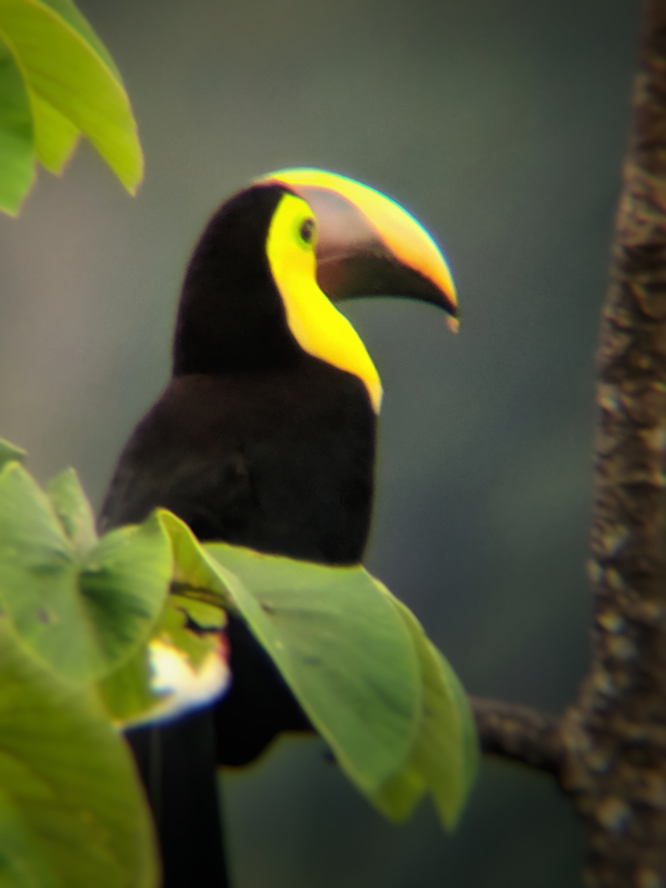
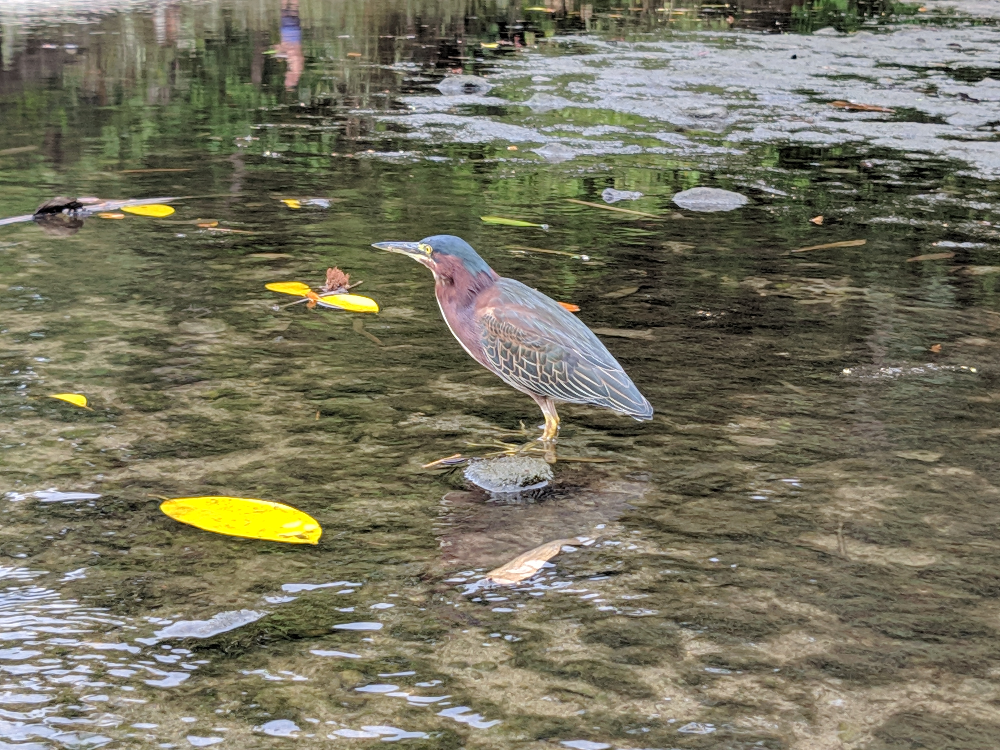

My Life List
What is a life list?
 A life list is a list that birders use to keep track of the date and location the first time they see a species of bird in their lives, also known as a lifer. This tiger heron peeking out from a mangrove tree was a lifer for me, as well as the yellow-throated toucan and green heron. In order to count as a lifer, a bird has to be seen; most birders agree that hearing a bird doesn’t count! A life list can be as specific as you want, recording the exact date and location a species of bird was seen, or more general, recording month or year and country. I have provided my personal life list below, with the year and country that I first saw each species.